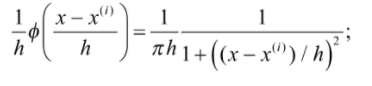
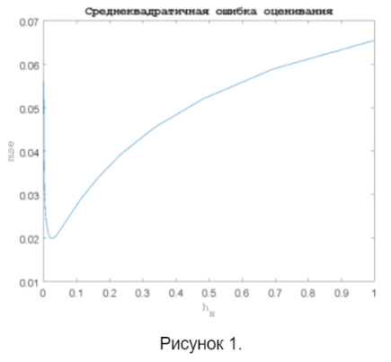
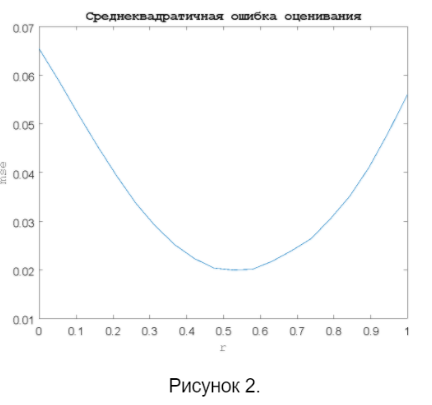

Лабораторная работа № 5
Иванов Иван Иванович, группа 2-1
Вариант № 2-а
Исследование непараметрических алгоритмов оценивания плотности распределения
случайной величины
Цель работы
Исследовать алгоритмы оценивания плотности распределения случайных величин
и случайных векторов на основе методов Парзена и k ближайших соседей.
Задание
- Вычислить абсолютную ошибку оценивания плотности распределения случайной
величины при использовании оценки Парзена. Построить график зависимости
ошибки оценивания от величины параметра оконной функции следующего вида:
- гауссовская функция;
- показательная функция;
- оконная прямоугольная функция;
- оконная треугольная функция.
- Вычислить среднеквадратичную ошибку оценивания плотности распределения
случайной величины по методу Парзена для окна вида:
- 

- Окно какого вида будет обеспечивать оптимальное по критерию
среднеквадратичной ошибки оценивание плотности распределения случайной
величины в соответствии с методом Парзена? Построить графики зависимостей
ошибок от объема обучающей выборки. Сравните следующие виды окон:
- гауссовская функция, показательная функция и оконная
прямоугольная функция;
- гауссовская функция, оконная прямоугольная функция
и оконная треугольная функция.
- Вычислить абсолютную ошибку оценивания плотности распределения
случайного вектора в двумерном пространстве признаков при использовании
оценки Парзена. Построить график зависимости ошибки оценивания от
величины параметра оконной функции. Используйте одну из следующих оконных
функций:
- гауссовская функция c использованием диагональной матрицы;
- гауссовская функция c использованием матрицы ковариаций;
- показательная функция;
- оконная прямоугольная функция;
- оконная треугольная функция.
- Окно какого вида будет обеспечивать оптимальное по критерию
среднеквадратичной ошибки оценивание плотности распределения двумерного
случайного вектора по методу Парзена? Построить графики зависимостей
ошибок от объема обучающей выборки. Сравните следующие виды окон:
- гауссовская функция c использованием диагональной матрицы и
гауссовская функция c использованием матрицы ковариаций;
- гауссовская функция c использованием диагональной матрицы,
показательная функция и оконная треугольная функция;
- гауссовская функция c использованием матрицы ковариаций, оконная
прямоугольная функция и оконная треугольная функция.
-
Получить оценки плотности распределения случайной величины на основе
метода k ближайших соседей. Определить значение параметра k, при котором
достигается минимум среднеквадратичной ошибки оценивания.
-
Реализовать оценку плотности распределения двумерного случайного вектора,
плотность которого задается на основе пяти гауссовых функций. Определить
оптимальное по критерию среднеквадратичной ошибки оценивания значение
параметра k.
Код программы (внесённые изменения в шаблон кода выделены)
%%% Оценка плотности распределения вероятностей методом Парзена
clear all; close all;
%1.Генерация обучающей выборки и оценка плотности для одномерного случая
n=1; %размерность вектора наблюдений
N=1000; %объем обучающей выборки
K=20; %число шагов по значению параметра оконной функции
H=100; %число реализаций эксперимента
rs=0:1/(K-1):1;
hNs=N.^-rs;
err=zeros(1,K);
x=-3:0.05:3; %область значений СВ для визуализации
mx=length(x); %число точек, для которых проводится оценка
p=zeros(1,mx); %плотность распределения СВ
p(x>0)=exp(-x(x>0));%вид оцениваемой плотности (показательная)
%2.Вычислительный эксперимент
for t=1:H
for k=1:K
h_N=hNs(k); %параметр оконной функции
%Генерация обучающей выборки
XN=-log(rand(1,N)); %показательное распределение (b=1);
%Вычисление значений функций ядра
fit=zeros(N,mx);
for i=1:N,
p_k=zeros(n,mx);
mx_i=repmat(XN(:,i),[1,mx]);
ro=1+((x-mx_i)/h_N).^2;
fit(i,:)=prod(1./(ro*pi*h_N),1);
end;%i=1:N
%Вычисление оценки плотности распределения вероятностей
if N>1
p_=sum(fit)/N;
else
p_=fit;
end;
%Вычисление среднеквадратичной ошибки оценивания
err(k)=err(k)+sqrt(sum((p-p_).^2)./N)./H;
end;%k=1:K
end;%t=1:H
%3.Визуализация зависимости ошибки от значения параметра h_N
figure; grid on;
plot(hNs,err);
title('Среднеквадратичная ошибка оценивания','FontName','Courier','FontSize',14);
xlabel('h_N','FontName','Courier'); ylabel('mse','FontName','Courier');
figure; grid on;
plot(rs,err);
title('Среднеквадратичная ошибка оценивания','FontName','Courier','FontSize',14);
xlabel('r','FontName','Courier'); ylabel('mse','FontName','Courier');
Результаты выполнения задания
- Зависимость для среднеквадратичной ошибки оценивания плотности распределения
случайной величины по методу Парзена

- Зависимость для среднеквадратичной ошибки оценивания плотности распределения
случайной величины по методу Парзена

Выводы
- На основе результатов имитационного моделирования алгоритмов оценивания
плотности по методу Парзена получены зависимости для среднеквадратичной ошибки
оценивания плотности распределения случайной величины от параметра оконной функции.
Зависимость имеет ярко выраженный минимум, который определяет оптимальное значение
параметра оконной функции для заданного вида плотности равное, примерно, 0.02-0.03.
- На основе результатов имитационного моделирования алгоритмов оценивания плотности
по методу Парзена получены зависимости для среднеквадратичной ошибки оценивания плотности
распределения случайной величины от величины r, определяющей значение параметра оконной
функции в соответствие с формулой h(r)=N^-r. Зависимость имеет ярко выраженный минимум,
который определяет оптимальное значение r для заданного вида плотности равное, примерно,
0.5-0.55.